超级地球 Products
另见: Corporations
List of Implied or minor in-宇宙 products mentioned by 绝地潜兵 1 and 2.
Products Produced By 超级地球
Drinks
- A Taste of Freedom/Democracy
- Serves as a placeholder for vending machines and in-game bottle props.
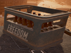
A crate of bottles labelled A Taste of Freedom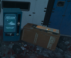
Two vending machines, blue and orange, labelled 'A Taste of Freedom' and 'A Taste of Democracy' respectively.
- Dr. Democracy[1]
- According to 背景 pickups, has 17 seasonings and additives[2]
- Mr. Taste[1]
- Prof. Delicious[1]
- Yummm, Esq.[1]
- Diet Democracy[3]
- Slogan for the beverage is "Free yourself"
- "Democracy Drafts" Premium 轻型 Beer
- Heroade (Strohmann News)
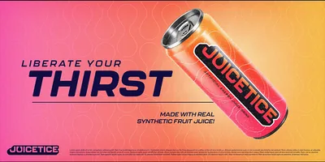
Juicetice is a soft drink 连 found advertised in 超级地球 Metropolis biomes.
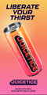
Liberate your thirst. Juicetice. Made with real 合成 fruit juice!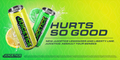
Hurts so good. New Juicetice Lemonizer and Liberty Lime. Juicetice: 特攻 your senses!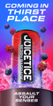
Coming in thirst place. Juicetice Berry 弹幕. 特攻 your senses.
The LiberTea Store is a chain tea store found in 超级地球's colonial cities. They sell tea products.
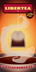
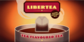
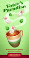
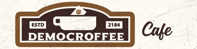
Democroffee cafe is a cafe found advertised 超级地球's colonial cities, established in 2184. They serve coffee.
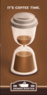
It's Coffee Time. Democroffee- Drink Coffee Now, Wake Up And Smell The Freedom. Democroffee
- It's Coffee Time. Democroffee
Foods
- 超级地球's Finest Fruit Mix
- 偶尔 found as a prop.

- A Ring of Herring
- 偶尔 found as a prop.
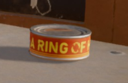
- 偶尔 found as a prop.
- Purples (Fruit)[4]
- Mentioned by the 服务 技术员 as a cafeteria food.
- Chef Squick calamari[5]
- Showcased in a Strohmann News report after the return of the 光能者, questioning if calamari makes you 易受 to mind 控制.
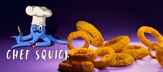
- Showcased in a Strohmann News report after the return of the 光能者, questioning if calamari makes you 易受 to mind 控制.
- Fish fry[6]
- Similar to Purples, mentioned by the 服务 技术员 as a cafeteria food.
- Jellydivers (Candy)[7]
- Comes in two flavors: "Strawberry Strafe" and "Blueberry 弹幕".
- 产品 was discontinued 10 days after launching due to reports of "uncommanded 生物 放电"[8].
- Freegum
- Strawberry flavored gum found advertised in the 超级地球 Metropolis
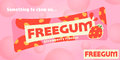
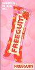
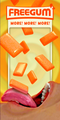
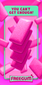
- Old Oswald's Oatmeal
- 偶尔 found in bunkers & 地下 caches

Old Oswald's Oatmeal found in a Bunker
- 爱国者 Hut Helldawgs
- Advertised in the 超级地球 Metropolis 生物群系 as having a "all-beef bun".
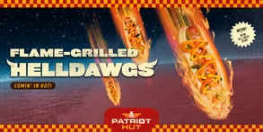
Flame-Grilled Helldawgs: Comin' in hot!
- Cornstitution
- Advertised in the 超级地球 Metropolis 生物群系 as a "proud 产品 of our 超级地球" colonies.
- Possibly one of the 主体 purchasers of crops in the many corn fields found around missions at 非法 广播 Towers or Minor 兴趣点.
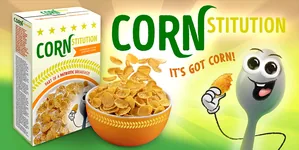
Cornstitution: It's got corn!
- SUMY Frozen Yoghurt
- the TR-7 大使 of the Brand 护甲 was made to 推广 this dessert.
- Hearty Hovel Fried Rib PizzaRito
- Mentioned in a Coretta Kelly "All You Need To Know" TV 广播.
- 未知 GW1 Cereal Brand
- Mentioned in the 描述 of the Watchful Compatriot cape as a brand that popularized the cape's retro print.
Miscellaneous Products
- Rectangle 8 Phone
- Democracy certified with advanced ThoughtGuard monitoring.
- Democracy certified with advanced ThoughtGuard monitoring.
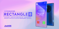
- Super Clean Stain Removal Spray & Detergent
- Able to remove spores, bile, blood & oil. Can melt human skin.
- Able to remove spores, bile, blood & oil. Can melt human skin.
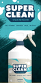
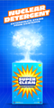
- Eagle Sweat
- A brand of perfume advertised on the 超级驱逐舰 TV, stating it can rewrite your genetic code.
- A brand of perfume advertised on the 超级驱逐舰 TV, stating it can rewrite your genetic code.
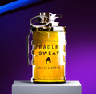
- Eagles Collide
- A brand of perfume found advertised in 超级地球 Metropolis biomes.
- Make Love For War. 警告: Do Not Drink
- Make Love For War. 警告: Do Not Drink
- Freedom's Beacon
- A 超级地球 报纸 that costs 10 超级货币 per paper. The 191th issue reports on the 光能者 对……的入侵 Calypso.
Freedom's Beacon: "Democracy Dies Without 方向." 光能者 INVADE, 绝地潜兵 deploy to Calypso; Fighting rages in colonies
- Freedom Catalogue
- Mentioned by the 服务 技术员. Sold collectible stickers that looked like squished bugs, with varying rarities, similar to a trading card or Funko pop.
- 真理执行者: Enforcers of Truth 谜团 novel
- A novel mentioned in the 描述 of the UF-16 Inspector.
- Tales of the 毒蛇突击兵 comic book
- Mentioned in the 描述 of the PH-56 Jaguar 护甲套装. Allegedly based off a real 超级地球武装部队 特殊 operations unit.
- The Breach 图形 novel
- Mentioned in the 描述 of the Breach cape, based off the final 任务 of the 361st 自由烈焰 unit.
Domestic 护甲 & Capes
- CE-74 Breaker 护甲
- A domestic version of this 护甲 is sold to home renovators to 改进 效率.
- SA-32 Dynamo 护甲
- A domestic version of this 护甲 is sold to mountainous colonies for throwing 天气 monitoring 装备.
- FS-55 蹂躏者 护甲
- A domestic version of this 护甲 is sold to colonial farmers to assist with planting crops & mines.
- CW-36 Winter 武士 护甲
- Surplus sets are sold to citizens for nature 摄影 and hunting.
- O-2 重型 Operator 护甲
- This 护甲套装 is employed by citizens operating 重型 machinery.
- Foesmasher 披风
- Surplus capes are used by domestic campers to make tents.
- De-Forester's Sailcloth 披风
- Similar to Foesmasher, this cape can be used as camp roofing, groud insulation, or a blanket.
参考
- ↑ 1.0 1.1 1.2 1.3 Vending Machine: "Offerings include: Dr. Democracy, Mr. Taste, Prof. Delicious, & Yummm, Esq."
- ↑ Vending Machine: "Dr. Democracy: With 17 seasonings and additives"
- ↑ Vending Machine: "Diet Democracy. Free yourself."
- ↑ 服务 技术员: "I heard the chow hall got a shipment of Purples in today. They're not my 收藏 fruit, personally, but it's nice just to have something different."
- ↑ Strohmann News 广播
- ↑ 服务 技术员: "It's fish fry night at the chow hall. I don't know what planets they get these fish from, and I don't care. It's all fried, and it's all good."
- ↑ "NEW 产品 LAUNCH – JELLYDIVERS! Because we've beaten the 光能者. Because 超级地球 is safe. Because Liberty has never been more sweet. We can now celebrate—with JELLYDIVERS! The only candy approved by 超级地球 and inspired by 绝地潜兵! Packed with flavor, patriotism, and just a hint of high-fructose heroism. Available in two glorious flavors: - Strawberry Strafe - Blueberry 弹幕 警告: Excessive consumption may lead to uncontrollable chanting of “FOR 超级地球!” Pick up your pack today and chew your way to a better tomorrow. And remember—Freedom is the sweetest victory!" 绝地潜兵2 Tweet. Published on May 9, 2025, accessed on May 21st, 2025.
- ↑ "After reports of children and candy-loving adults experiencing an uncommanded 生物 放电 - we've decided to pull Jellydivers from the shelves. Investigations are under way but the most likely 解释 is tampering by the 光能者. Not only are they coming for our cities - they're coming for our children." 绝地潜兵2 Tweet. Published on May 19, 2025, accessed on May 21st, 2025.